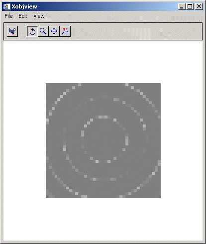

IDL objects which support an alpha channel are:
|
|
||||||
|
|
||||||
|
|
||||||
|
|
||||||
|
|
||||||
|
|
Note: The transparency of an IDLgrImage object can be defined using a band of data defining the alpha values, and/or the ALPHA_CHANNEL property. Regardless of which way the image transparency is defined, you also need to set BLEND_FUNCTION property.
The alpha channel has many uses. One of the most important is drawing primitives semi-transparently, which can be used to enhance your object graphics scene. An example might be a text label drawn semi-transparently to let other graphical details “show through” the text label. This would allow you to use a larger text font size, rather than using a small font size to squeeze text between details in a scene. Another use for alpha channel might be to draw polygons and surfaces semi-transparently, allowing you to see “inside” certain objects and structures.
Some of the most important uses for semi-transparent rendering are discussed in the following sections.
| • | Opacity and Transparency |
| • | Blending Mathematics |
| • | Rendering Order |
| • | Viewing and Rotation |
| • | Depth Buffer Updating |
Opacity describes the degree to which an object blocks the appearance of other objects. In IDL, the value used for the ALPHA_CHANNEL properties in IDLgr* objects is a measure of the object's opacity. A value of 1.0 indicates complete opacity. The object completely blocks the appearance of other objects. Conversely, an opacity value of 0.0 indicates that the object does not block the appearance of objects at all. Intermediate values indicate varying degrees of visibility for covered objects.
Transparency is essentially the opposite of opacity. Transparency indicates the degree to which an object does not block the appearance of other objects. Complete or full transparency is indicated by an opacity value of 0.0, while an object that is not transparent at all has an opacity value of 1.0.
By default all IDLgr* graphic objects use an ALPHA_CHANNEL value of 1.0, indicating full opacity (zero transparency), matching the rendering behavior before the addition of the ALPHA_CHANNEL property. To change the opacity of the object, simply change the this property to a value between 0.0 (zero opacity or full transparency) and 1.0.
Blending is the drawing of semi-transparent objects on a screen already containing objects. During rendering, the color of the pixels belonging to the primitive being rendered are blended with the color of the pixels that are already on the screen, producing the desired blending effect. This process is accomplished on a pixel-by-pixel basis.
IDL uses this well-established blending equation:
newColor = oldColor * (1 - alpha) + primitiveColor * alpha
An example might suppose that you want to draw a red square in an area of the screen that is completely green. By default, the alpha value is 1.0, so the result is:
[255, 0, 0] = [0, 255, 0] * (1.0 - 1.0) + [255, 0, 0] * 1.0
The green color is removed completely and replaced by red, the expected result of conventional non-blended rendering.
If the alpha value is changed to equal 0.5, the result is:
[127, 127, 0] = [0, 255, 0] * (1.0-0.5) + [255, 0, 0] * 0.5
The resulting color is the half of the red of the polygon combined with half of the green of the background, a pale yellow.
If you draw another red square in the same place with the same alpha, the red square is blended with the now current contents of the screen:
[190, 63, 0] = [127, 127, 0] * (1.0-0.5) + [255, 0, 0] * 0.5
Note: Large levels of semi-transparent rendering may reduce rendering performance. This is because the graphics blending operation that is performed involves reading the destination pixel from the frame buffer, combining it with the new color value and then writing the result back to the frame buffer. This is more expensive than simply overwriting the frame buffer contents with the new color value. The degree to which your performance will be impacted depends heavily on the hardware and software components of your graphics system.
The colors of the pixels on the screen are important when drawing a blended primitive. Similarly, the order in which the primitives are drawn is also very important when drawing scenes with blended primitives.
In computer graphics, depth sorting presents a similar challenge. Without depth sorting, a scene would have to be drawn from back to front to obtain a correct result. IDL handles depth sorting by providing a "depth buffer" (also known as a "Z-buffer") allowing you to draw the primitives in any order while allowing the primitives closer to the viewer to still appear to be on top.
There is no similar feature for alpha-blended primitives. Be sure to draw the blended primitives carefully so that all primitives behind a blended primitive are drawn before the blended primitive.
If your scene consists of many primitives that are not blended and a few text labels that are drawn with blending, it is a good idea to defer the drawing of the labels until after everything else is drawn. This will allow users to see through all labels and to see the objects beneath. If a non-blended primitive is drawn on top of and after a blended primitive, it will cover the blended primitive. If any primitive is drawn behind but after a blended primitive, the primitive drawn later will not appear where the blended primitive covers it, due to depth buffering. In other words, it is not possible to blend primitives unless all objects behind the blended primitive which are to be blended are already drawn.
Note: If you have a complex scene where many primitives are blended, it may be difficult to determine the proper ordering.
Inter-primitive rendering order deals with the ordering of primitive objects within an IDLgrModel. For primitives which do not intersect each other, it is straightforward to order these in a back-to-front viewing order, particularly if your scene is fixed so it cannot be rotated by the user. This is done by arranging your primitives along the Z direction so that the objects farthest away appear first in the IDLgrModels, which makes them draw first.
If primitives intersect, it may be necessary to divide the object so that the back parts of each primitive are drawn first, and then the front parts. This can be a very difficult issue.
Intra-primitive rendering order deals with the ordering of graphical items within an IDL graphics primitive. Some primitives, such as IDLgrSurface and IDLgrPolygon actually consist of a large number of individual polygons. They are not all drawn at once, and the order in which they are drawn is also important when drawing with blending.
You can control the order in which the individual polygons are drawn in an IDLgrPolygon object by ordering the vertices or specifying the order in the POLYGONS property. Polygons specified first in the POLYGONS list are drawn first.
If you draw a typical height field with IDLgrSurface and invoke blending, the object might look right from some viewing orientations.
For example, try the following:
XOBJVIEW, OBJ_NEW('idlgrsurface',$ BESELJ(shift(dist(40),20,20)/2,0) * 20, STYLE=2,$
ALPHA_CHANNEL=0.5)
|
 |
Notice in the previous figure that you can see-through the waves in the object to see other waves, but only when you view the object from certain directions. From other directions, all you see are the waves closer to you.
Solving this problem can be extremely difficult. A complete solution would generate a scene for every possible viewing angle, where the polygons are drawn back to front, splitting them if necessary. There are several techniques available for accomplishing this, one of them being the Binary Space Partition Tree, however this is not supported directly in IDL. If the objects are simple, it might be possible to construct a few scenes that give correct or passable results.
For example, if you wanted to look at a semi-transparent sphere from all angles, creating eight models might suffice. Each of the eight models contains the polygons sorted in back-to-front order for a viewing direction corresponding to each of the eight octants formed by the half spaces of the three principle axes. As the user rotates the scene with a trackball, the program would select the appropriate model, based on the current viewing direction. More complex scenes may require more models.
For any value of the ALPHA_CHANNEL property, IDL updates the depth buffer when the primitive is drawn, unless the DEPTH_WRITE_DISABLE property is set to a value that disables depth buffer updates. Thus, even if you draw a completely transparent primitive, the depth buffer is updated as if there were a visible primitive drawn there. This means that subsequent primitives drawn behind the transparent object are not visible. Though potentially confusing, this can also be a useful way to hide objects in certain situations.
After drawing a transparent object, that there may be gaps in objects drawn later. For example, suppose lines in a plot are drawn with ALPHA_CHANNEL=0 (transparent), and then symbols are drawn. Where the symbols and lines intersect, there are gaps in the symbols. The gaps are caused by the invisible lines changing the depth buffer, thus masking out the symbols that are drawn later. At times, the ability to modify the depth buffer without changing the color buffer is a useful tool for clever clipping operations. In other contexts, you may consider using invisible polygons to mask out entire areas. However, if the partial or entire invisibility of objects drawn after a transparent object is unintended use one of the following options:
| • | Set the DEPTH_TEST_FUNCTION=4, or disable depth testing entirely using the DEPTH_WRITE_DISABLE property. |
| • | Set the HIDE property to 1 if ALPHA_CHANNEL becomes 0. |
Either of these options would erase the gaps in the symbols caused by the transparent plot lines as described in the previous situation.